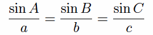

Neither is AC less than AB, for then the angle ABC would be less than the angle ACB, but it is not. Therefore AC is not less than AB.
And it was proved that it is not equal either. Therefore AC is greater than AB.
Therefore in any triangle the side opposite the greater angle is greater.
Q.E.D.
Guide
As mentioned before, this proposition is a disguised converse of the previous one. As Euclid often does, he uses a proof by contradiction involving the already proved converse to prove this proposition. It is not that there is a logical connection between this statement and its converse that makes this tactic work, but some kind of symmetry involved. In this case, if one side is less than another, then the other is greater than the one, and the previous proposition applies. So the relevant symmetry is between "lesser" and "greater."
The law of sines
Although some of the geometric underpinnings of trigonometry appear in the Elements, trigonometry itself does not. Trigonometry makes its appearance among later Greek mathematics where the the basic trigonometric function is the chord, which is related to the sine.
Without going into details, the law of sines contains more precise information about the relation between angles and sides of a triangle than this and the last proposition did. The law of sines states that

where a denotes the side opposite angle A, b denotes the side opposite angle B, and c denotes the side opposite angle C. In other words, the sine of an angle in a triangle is proportional to the opposite side.
By means of the law of sines the size of a angle can be related directly to the length of the opposite side.
Use of Proposition 19
This proposition is used in the proofs of propositions I.20, I.24, and some others in Book III.